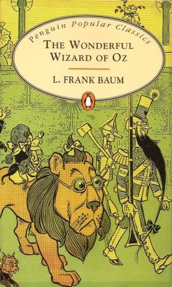
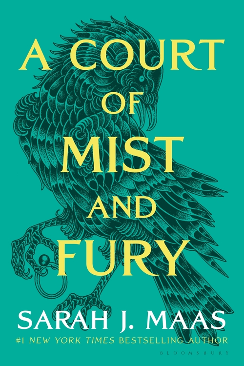
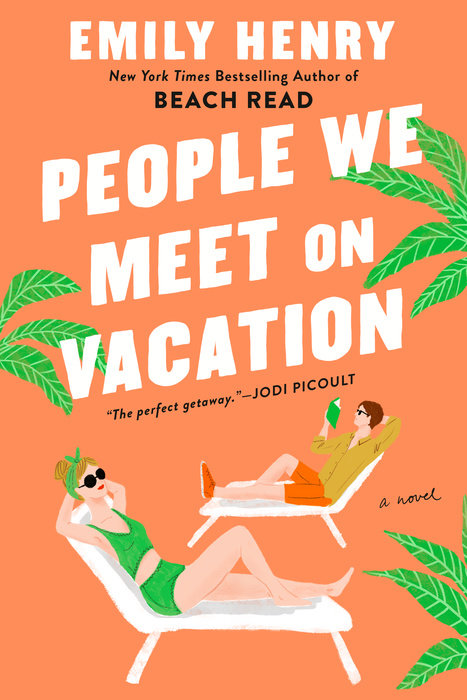
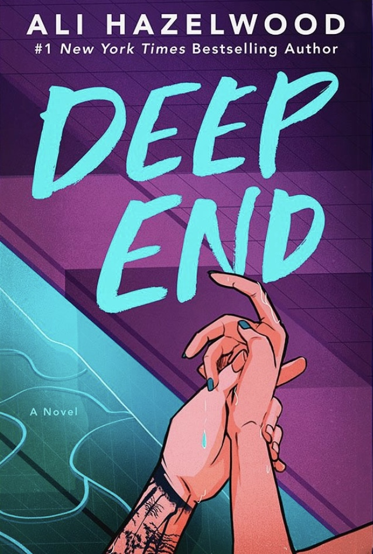

Clásico absoluto, una verdadera vergüenza que todavía no lo había leído. Técnicamente sigo sin leerlo, porque escuché el audiolibro. No podría haberlo terminado jamás de no haber sido el caso, porque POR FAVOR que largo al pedo que es este libro ! No es que me haya parecido malo en sí, pero me esperaba una obra maestra y claramente no lo fue. Tan así que no me dieron ganas se seguir con los siguientes, o por lo menos no de inmediato. La relación de Claudia y Louis me pareció extremadamente perturbadora, ni hablemos del final de Claudia. Terminé el libro sin estar segura de qué personajes se supone que me tienen que caer bien y cuales no...
Otro clásico que era una vergüenza que todavía no había leído, y que también audioleí. No estuvo mal, es cortito y entretenido, pero me pareció re violento para ser un libro infantil, y es por eso que le saco estrellas.
Lejos de arrepentirme de haber empezado ACOTAR, creo que lo aguanté porque una vez más, audioleí más que leí. Me pareció malo nivel Crepúsculo, por ahí un poquito por encima. La historia tarda un MONTÓN en ponerse interesante, pero para el último tercio no lo podía dejar. Vale la pena sufrirlo, porque los siguientes levantan un montón.
La obra maestra tanto esperada por fin llegó !!! Bueno, por ahí exagero un poco, pero no puedo creer que el primero haya sido tan malo siendo el segundo TAN bueno. El final me explotó el cerebro, tuve que volver a leer el final del primero, y releí todo el segundo antes de empezar el tercero, porque realmente WOW. La evolución de Feyre, descubrir al verdadero Rhysand, Velaris, el Inner Circle, una vez más digo que valía la pena sufrir el primero para poder leer este. De esos que te dejan triste porque sabés que nunca vas a volver a leerlo por primera vez.
Honestamente no tengo nada que decir, estuvo bien. No tengo nada que criticarle, preferí el segundo pero no porque este haya tenido nada malo.
ESTE SI ES MALO !!! Es un fanfic de Navidad malo, y quién me conoce sabe que "fanfic de Navidad" no es una crítica de mi parte porque AMO leer fanfics de Navidad. Pero este es MALO. Es un fanfic malo en donde los personajes están totalmente out of character. Me costó un huevo leerlo y eso que es re cortito, pero no paraba de procrastinar y agarrar el teléfono porque mirar memes era mil veces más entretenido que leer esta verga.
Qué decir de Silver Flames ? Una vez más valió la pena sufrir el anterior porque POR FAVOR una obra maestra. Al principio pensás que no vas a engancharte jamás porque Nesta es lo más tóxico e insoportable que existe, pero es imposible no amarla con ese redemption arc tan hermoso que tiene. Lloré y lloré y lloré, la relación con las amigas es hermosa, verla luchar contra la depresión y encontrar las ganas de vivir, aceptar ser amada y esa relación hermosa que termina desarrollando con Cassian... Cinco estrellas más que merecidas.
La FMC es divertida, el MMC es un hottie misterioso que querés salvar, es un enemies to lovers con un slow burn que no se hace largo porque el libro es cortito. La parte de las cartas del padre me dejó llorando como si no hubiera un mañana. Hermoso hermoso hermoso libro, se convirtió enseguida en mi libro favorito y me costó empezar otro después de este.
Agrego que me parece indispensable empezar por este para entender los Easter Eggs de los libros siguientes, lo cual me parece una genialidad.
Si pudiera volver a leer los libros de Emily Henry por primera vez, no eligiría Funny Story segundo. Don't get me wrong, lo amé y sus cinco estrellas son más que merecidas. Miles es EL book boyfriend, todavía no leí a nadie que lo supere. La historia es divertida, y eso que pensaba que el fake dating no iba a ser un trope que me guste, pero resulta que sí. Me encantó que Daphne es partidaria de que escuchar audiolibros cuenta como leerlos. PERO el misunderstanding trope claramente me cansa rápido, y leer Beach Read seguido de Funny Story no fue una buena idea, y me dejó con miedo que sean todos iguales (spoiler alert: por suerte, no).
Este libro me DESTRUYÓ. Lo amé. No me esperaba llorar tanto. Me pareció espectacular que había pasado el 90% del libro y todavía no sabía cómo iba a terminar – o sea sabía que iba a terminar bien porque ya había leído el epílogo de Beach Read, cuando January y Gus se cruzan con Nora y Charlie, lo que quiere decir que terminan juntos, PERO CÓMO ?? Terminé amando el final, tenía muchísimo miedo que gane el small town trope pero no, respeta a Nora y era todo lo que quería que pase.
Poppy me mantuvo gritando IRL durante días, porque QUE CARAJOS PASÓ EN CROACIA DIGANLO DE UNA VEZ !!!!!!! Una amiga que estaba conmigo y sufría que me queje en voz alta me dijo que hubiera sido hilarante que termine el libro y nunca digan exactamente que pasó en Croacia y creo que hubiera tirado el Kindle por la ventana.
Encontré este libro buscando algo mímimamente menos heteronormativo y un poco más inclusivo. PONELE. La FMC es bi pero igual es una relación hetero, pero no me quejo porque el MMC es adorable nivel Miles. Me gustó el personaje de Ginger, su cáracter fuerte, badass, su lucha contra la misoginia y el patriarcado. Me molestó que haya misunderstanding trope (para este momento ya decidí que es algo que no me gusta, o más bien que me cansa y me hace querer pegarle a los personajes).
No me esperaba amar este libro de esta manera. Quise incursionar en el dark romance y empezar por este fue la mejor decisión que pude haber tomado porque POR FAVOR QUE BUEN LIBRO !!! No paré de reirme de principio a fin, Aly y Josh son maravillosamente estúpidos, y el mejor personaje es obviamente Fred. Lo leí en dos días, y al tercero lo volví a empezar con el audiolibro, que vale completamente la pena.
Citando a mi review de Goodreads preferida : "it did hurt". No sé por donde empezar. Le dí tres estrellas unicamente porque la playlist es espectacular y aún después de haber terminado el libro seguía escuchandola en loop. Me encantó además la idea del tablero de Pinterest para ir metiéndote en el mood. Lo empecé sabiendo que me estaba metiendo en algo más oscuro y más spicy de lo que venía leyendo hasta ahora, creía saber en dónde me estaba metiendo.... nada podría haberme preparado a lo que vino después. Obviamente me enganchó porque sino no lo hubiera terminado, la escena con los tiburones ya desde el principio del libro es tremendamente perturbadora, pero bueeeeeno, he leído tantas mierdas en mi vida que qué es una más ?
Me gustó la parte thriller. Toda la historia de Sylvester, el de la pata de palo, era bastante predecible, pero no nivel me aburrió leerla, me enganchó y estaba asustada leyendo sobre Kacey.
Lo peor del libro, sin dudas, es Enzo. Por momentos se pone demasiado violento sin razón, o sea entiendo que estaba enojado por el robo de identidad y todo eso, pero había momentos de violencia realmente innecesarios. Y al mismo tiempo de golpe se enamora y te quedás tipo "?????? Cuándo pasó eso". Empieza con el tema posesivo de my girl y no se qué, pero sigue tratándola para el orto, y me pareció tremendamente tóxico, siempre hablando de hacerle daño con mucha violencia física pero también psicológica. No tiene sentido que Sawyer se escape de su hermano para terminar con Enzo, pero supongo que eso pasa cuando una se niega a ir a terapia...
Una novela gráfica cortita y muy cute, sobre un mundo en donde todo y todos tienen nombre de queso. Además, tiene lesbianas. What's not to like ?
Este libro lo audioleí unicamente porque el narrador del MMC es el mismo que narra a Josh en Lights Out (sue me). Es malísimo, y por alguna razón hay un personaje en la versión libro normal que no está en la versión audiolibro, así que hay un par de momentos en los que cambian párrafos, y al final faltaba casi un capítulo entero. Pero eso no fue lo peor, no no no... El audiolibro tiene dos narradores, una mujer narra los capítulos de la FMC y ya establecimos que un señor narra los capítulos del MMC. Teniendo dos narradores, uno pensaría que cada uno lee los diálogos de su personaje en el capítulo del otro. PUES NO MI CIELA. Cada uno lee su capítulo, y pone voz de mina / chabón (según corresponde) cuando lee los diálogos del otro. POR QUÉEEEEEEEEE !!!!!!! Malísimo, malísimo, malísimo. Suelo aconsejar audioleer un libro que escrito no es tan bueno, pero en este caso NO. No lo lean, no lo escuchen, no vale la pena ya sufro yo por ustedes.
(Si se preguntan por qué después de esa crítica igual tiene tres estrellas : es porque me negué a darle menos que al de los tiburones)
Uno de los mejores libros que leí este año. Amé Deep End, la historia de Scarlett me pareció hermosa, Lukas definitivamente entró en el top de los book boyfriends. Penelope es lo único malo del libro, es insoportable de manera innecesaria.
Hay críticas que le dan con un caño porque la premisa de "nadadores kinky" los hacía esperar BDSM puro y duro, pero no hay que olvidar que son jóvenes incursionando y descubriendo juntos sus límites y lo que les gusta, a mí me pareció perfecto.
Después de la decepción del libro de los tiburones (de la misma autora), esperaba muchísimo de esta duología de la que habla todo el mundo que lee dark romance. Pero esta vez ni Pinterest ni la playlist lo salva, es MALO. Me pasé el libro gritándole al Kindle "MAKE IT MAKE SENSE !!!!!" porque cómo podés matar a alguien por ser un v10lador y después irte de lo más tranqui a v10lar a la chica que te gusta ??? No podías hablarle y pedirle salir como una persona normal en vez de stalkearla ??? Ni el cliffhanger logró que siga con el segundo, me bajé el audiolibro y veremos si algún día lo escucho. Lo que es seguro es que no voy a perder más tiempo de mi vida leyendo esta verga.
Encontré esta trilogía de casualidad buscando un romance cute, y tenía muchas más chances de encontrar una lectura safe si incluía lesbianas. Y las lesbianas no decepcionaron. Delilah es lo más, badass por fuera y softy por dentro. Amé leer su historia con Claire, pero sobretodo me emocionó la evolución de su relación con Astrid, y como todo fueron malentendidos de dos nenas que no sabían comunicar.
Un enemies to lovers con bi-panic Y fantasmas ? GIMME. Astrid es probablemente mi personaje favorito de la trilogía, pero no te das cuenta hasta que no leés su libro, su monólogo interior te rompe el cora pero su evolución es hermosa.
YOU DESERVE A DESTINY
Lo que más me gusta de este libro es que Stevie tiene ansiedad. Normalizan la salud mental, el ir a terapia y tomar medicación, y me pareció algo genial. Fuera de eso, la historia es hermosa, la evolución de ambas y de su relación es preciosa. Estoy descubriendo que si me gusta el trope de fake dating.